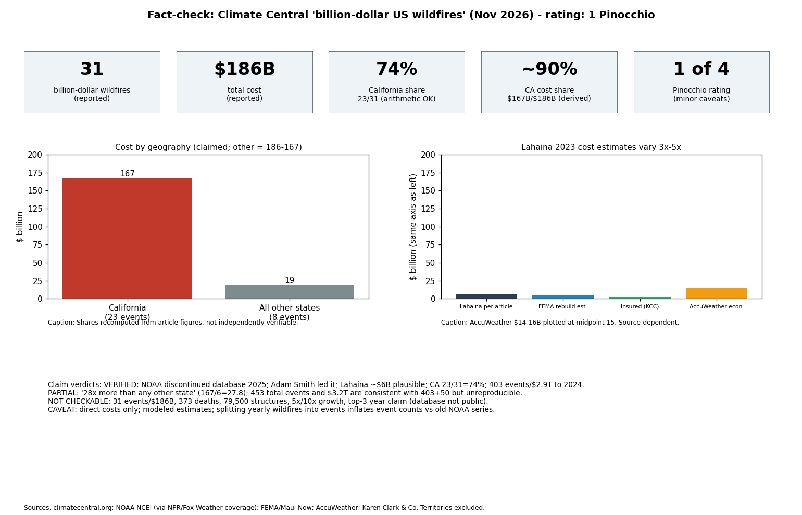

Fact-check: Climate Central, "Billion-dollar US wildfires" (Nov 2026)

Mostly sound but largely uncheckable against public data: 1 of 4 Pinocchios
The piece's headline figures (31 billion-dollar wildfires, about $186 billion, 373 deaths, 79,500 structures) come only from Climate Central's own database, which is not public at event level, so I could not reproduce them. Everything I could check is consistent or plausible. The rating is 1 Pinocchio (minor shading), driven by unverifiability and framing, not by any error found.
- Arithmetic holds: 23/31 = 74.2%; $167B/$186B = about 90% California.
- Borderline: "at least 28 times more than any other state": $167B / about $6B (Hawaii) = 27.8x, a hair under 28 and sensitive to rounding. Lahaina costs in public sources range from $3.2B insured (Karen Clark) and $5.5B rebuild (FEMA) to $14-16B economic (AccuWeather), so the ratio depends heavily on methodology.
- Context verified: NOAA stopped updating its billion-dollar database in May 2025; Adam Smith led it; Climate Central relaunched it with 403 events and over $2.9 trillion through 2024. The article's 453 events / $3.2 trillion implies about 50 added events and $0.3T since, not reproducible.
- Not checkable: 5x frequency / 10x cost growth (2007-2026 vs 1987-2006), August-November seasonality with an October peak, five costliest fires all in California, 17,200 total deaths, "2020 one of the top three years" (appears inconsistent with the wildfire context and I found no support).
- Misleading risk: Splitting each year's wildfires into separate events (previously one annual event) raises event counts and makes long-run frequency growth partly a methodology change; the piece compares across that seam. Costs are direct, modeled estimates and the 2026 figures are preliminary. The author built and leads the database, so the source is not independent. No attributed quotes beyond the author's own summary were found.
What would change the verdict: access to the event-level table, which could move this to 0 or 2 Pinocchios.
Claim table
| Claim | Verdict | Source | Confidence |
|---|
| NOAA discontinued database; Smith led 15 yrs | Verified | NPR, Fox Weather, Insurance Journal | High |
| Lahaina about $6B | Plausible (range $3.2B-$16B) | FEMA via Maui Now; AccuWeather; KCC | Medium |
| California 23 of 31 (74%) | Arithmetic correct | Article | High |
| 31 events, $186B, 373 deaths, 79,500 structures | Not checkable here | Climate Central database not public | Low |
| 28x any other state | Approximately (27.8x) | Derived | Medium |
| 5x / 10x growth | Not checkable; methodology seam | - | Low |
| 453 events, $3.2T since 1980 | Consistent with 403/$2.9T baseline; not reproducible | Climate Central relaunch coverage | Medium |
Limits of this work
I used WebFetch (which returned a summary, not verbatim text) and WebSearch only; I did not download the database or check Cal Fire, NIFC or the Camp Fire figures directly. Territories excluded.
Sources
- https://www.climatecentral.org/climate-matters/billion-dollar-us-wildfires
- https://www.npr.org/2025/06/04/1253616079/an-indicator-lost-big-disaster-costs
- https://www.foxweather.com/weather-news/noaa-billion-dollar-disaster-database-returns-climate-central
- https://www.insurancejournal.com/news/national/2025/08/06/834819.htm
- https://mauinow.com/?p=424578 (FEMA $5.52B)
- https://www.accuweather.com/en/weather-news/accuweather-increases-economic-loss-estimate-of-hawaii-wildfires-to-14-billion-to-16-billion/1569939
- https://www.captive.com/news/lahaina-wildfire-insured-property-losses-estimated-at-32-billion